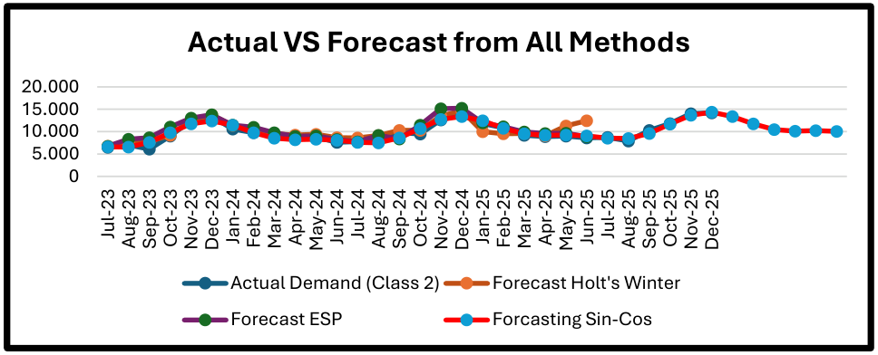

CASE 01 / SUPPLY CHAIN & OPERATIONS
Production Planning & Inventory Control
Drip coffee maker manufacturing: translating historical demand into a feasible material and capacity plan.
From demand to capacity
The lecturer-provided manufacturing case required a coordinated plan from forecasting to material requirements and work-center loading. The planning horizon for the master production schedule was January–March 2026.
Demand forecasting
Compared three methods on 30 monthly observations (July 2023–December 2025). Cyclical regression was selected for the lowest mean absolute deviation (MAD) and mean squared error (MSE), despite Holt-Winters having a marginally lower mean absolute percentage error (MAPE).
| Method | MAD | MSE | MAPE |
|---|---|---|---|
| Holt-Winters seasonal | 551.07 | 604,707.16 | 5.7223% |
| Exponential smoothing (Pegels) | 691.99 | 807,160.41 | 6.98% |
| Cyclical regression | 522.81 | 410,050.28 | 5.7293% |

Aggregate production planning
Compared four strategies to balance workforce stability, inventory and modeled cost. The hybrid plan used a baseline workforce of 169 and had the lowest modeled cost.
Total modeled cost (IDR billion)
Hybrid is approximately 10.72% lower than the transportation alternative; the gap versus the level plan is much smaller.
Master production schedule & RCCP
The 14-week MPS planned 34,701 finished units. Rough-Cut Capacity Planning (RCCP) identified all 11 work centers above 100% utilization before adjustment. The workforce model increased headcount from 169 to 187, bringing each work center below 100% at this planning level.
Work-center utilization (%)
Recreated from Module 3 Tables 3.19 and 3.29 (January values).
Material requirements planning
Compared five lot-sizing methods across 15 bill-of-materials items, including the finished product and 14 components. Netting and planned order releases aligned material demand with the 14-week MPS.
| Method | Modeled total (IDR B) | Holding cost (IDR B) |
|---|---|---|
| Lot-for-Lot (L4L) | 35.916 | 0 |
| Economic Order Quantity (EOQ) | 41.861 | 6.026 |
| Period Order Quantity (POQ) | 35.916 | 0 |
| Silver-Meal | 35.916 | 0 |
| Wagner-Whitin | 35.916 | 0 |
Capacity requirements planning
Detailed weekly Capacity Requirements Planning (CRP) exposed overloads after RCCP. Three alternatives were assessed: overtime with subcontracting, hiring only, and overtime with hiring.
Additional strategy cost (IDR billion)
Component totals: overtime, subcontracting, recruitment and three-month additional salary, as applicable.